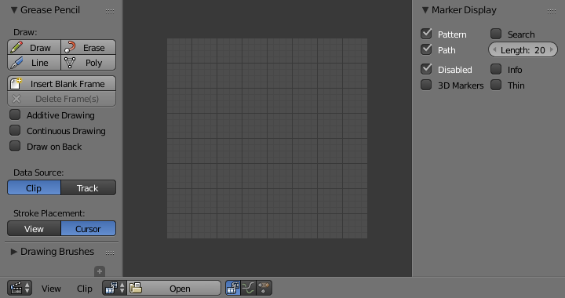
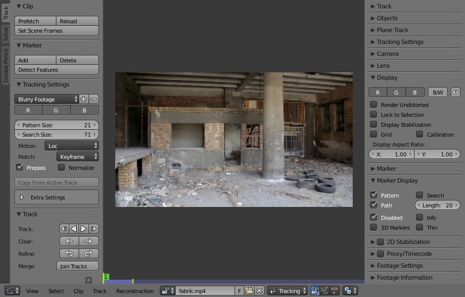

Introduction¶
The Movie Clip Editor has two main purposes, it can be used for tracking or masking movies. The empty editor looks like the image below.

Movie Clip Editor interface.
Header¶
Controls¶
- Movie Clip
- Data-block menu used for add a movie file. Both movie files and image sequences can be used in the Clip editor. When a movie clip is loaded into the Clip editor, extra panels are displayed in the interface.

Movie Clip Editor with an opened clip.
- Modes
- Pivot Point
- See Pivot Points.
- Proportional Edit
- See Proportional Edit.
Properties Region¶
- Footage Settings
- See Image Settings.
Main View¶
Mini Timeline¶
When a clip is loaded a Timeline is shown at bottom of the Preview. It expands over the full area limited by the animation range. You can move the Time Cursor by dragging with LMB.
The Timeline is composed of the following visual elements:
- Green line: Time Cursor
- Yellow: Motion track
- Yellow line: Keyframe
- Orange line: Shape keyframe
- Purple: Prefetched frames
- Light green line: Solve start/end keyframe